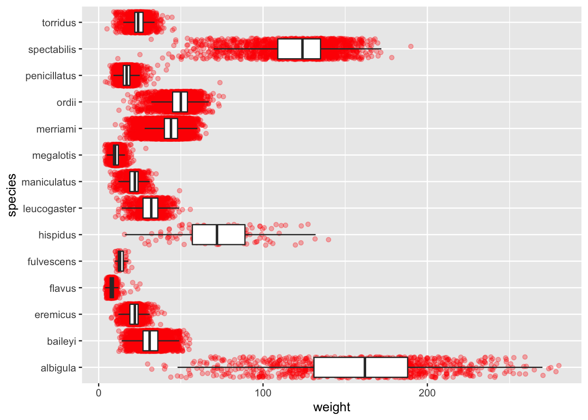
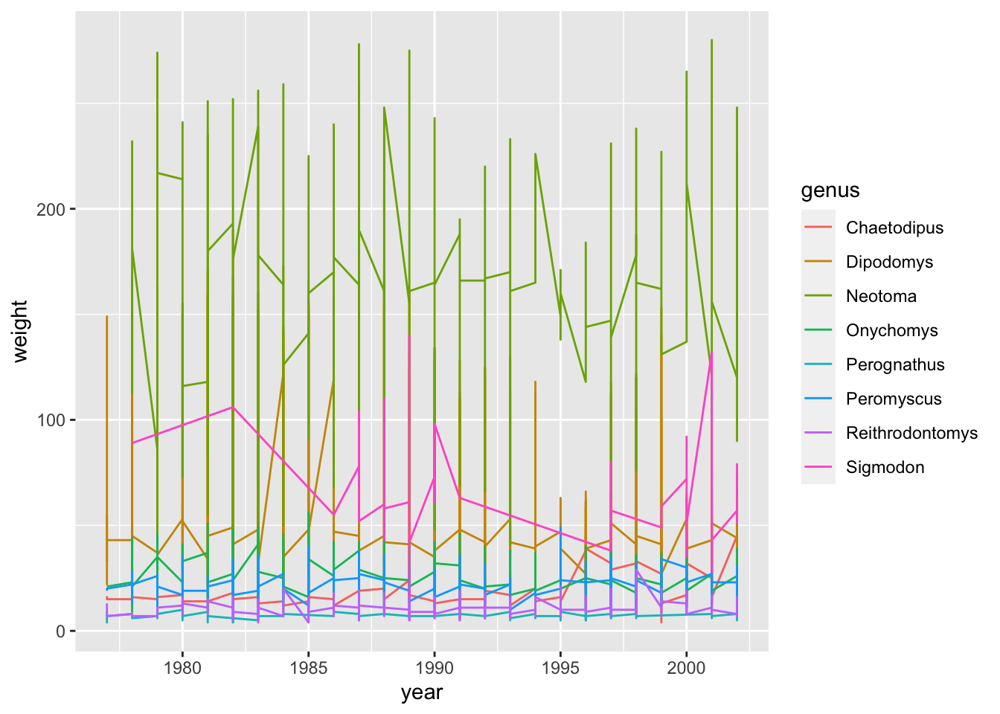
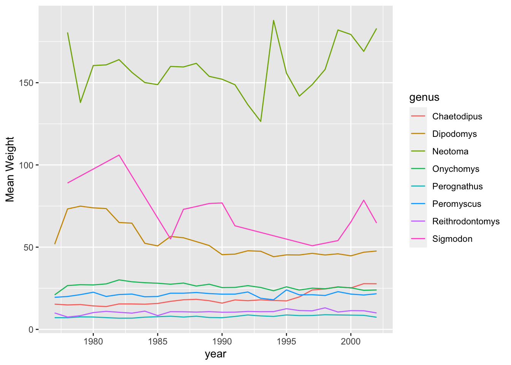
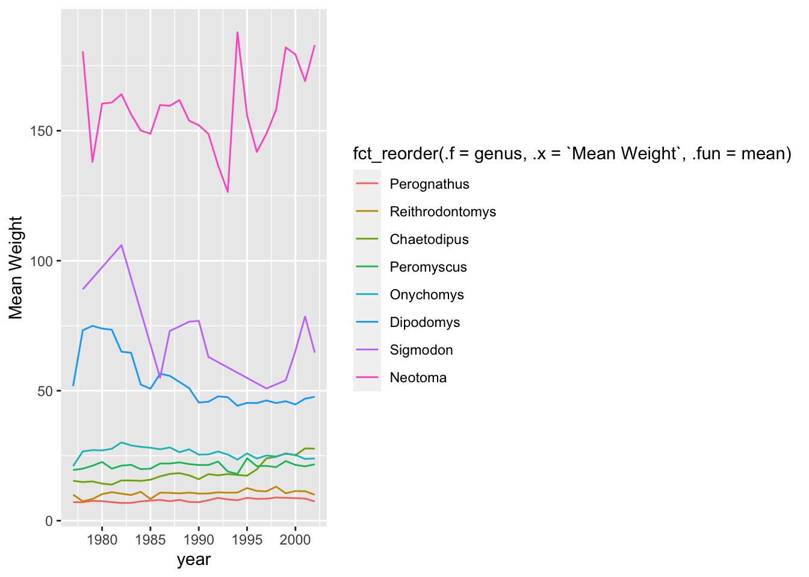
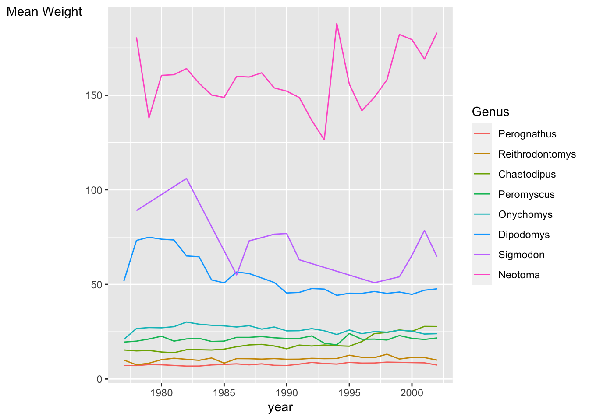
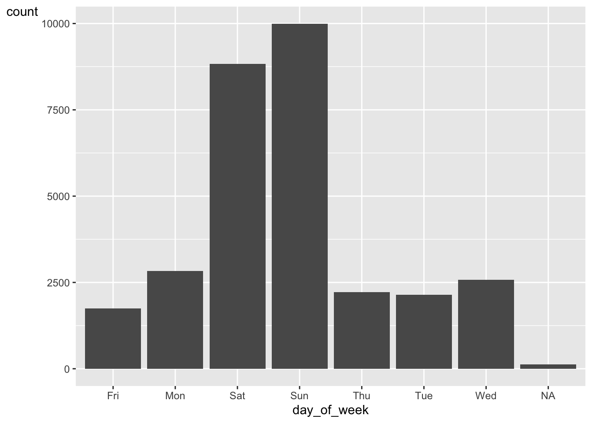
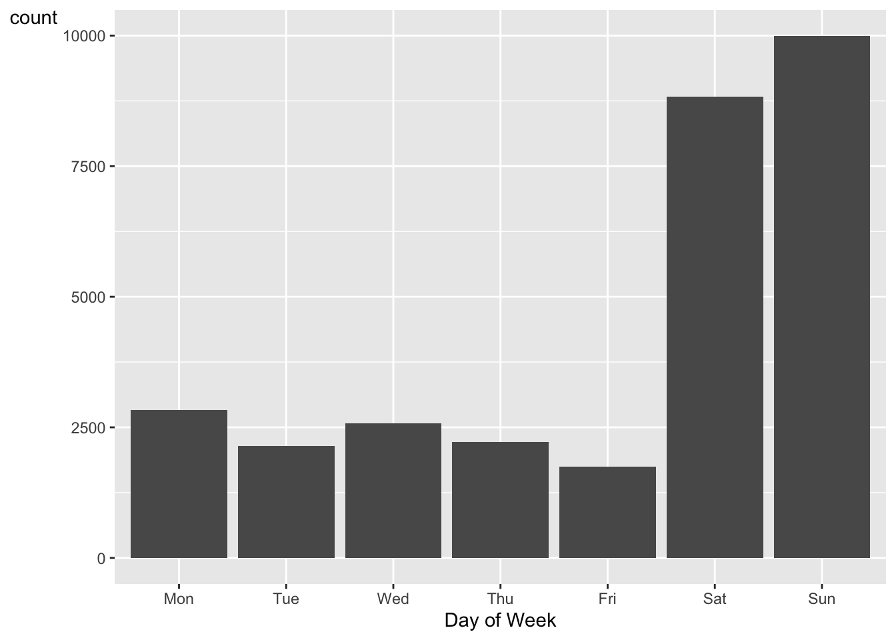
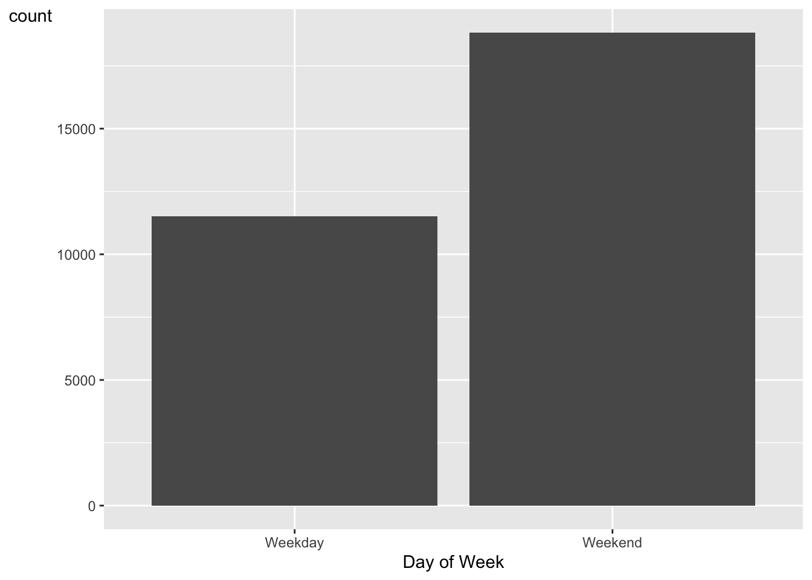

library(tidyverse)
library(forcats)Lab 5: Factors in Visualizations
Revisiting Lab 2
#| message: false
#| warning: false
surveys <- read_csv(here::here("supporting_artifacts", "learning targets", "surveys2.csv"), show_col_types = FALSE)ggplot(data = surveys, mapping = aes(x = weight, y = species)) +
geom_jitter(col = "red", alpha = 0.3) +
geom_boxplot(outlier.shape = NA)
Question 1
surveys <- surveys |>
mutate(species = as.factor(species),
species = fct_reorder(.f = species, .x = weight, .fun = mean, .desc = FALSE))ggplot(data = surveys, mapping = aes(x = weight, y = species)) +
geom_jitter(col = "red", alpha = 0.2) +
geom_boxplot(outlier.shape = NA) +
xlab("Weight (mg)") +
ylab("Species") +
theme(axis.title.y = element_text(angle = 0))
Time Series Plot
Question 1
surveys |>
group_by(year, genus) |>
ggplot(mapping = aes(y = weight, x = year, color = genus)) +
geom_line()
Question 2
surveys_time <- surveys |>
select(weight, year, genus) |>
group_by(year, genus) |>
summarize("Mean Weight" = mean(weight), .groups = "keep")ggplot(data = surveys_time, mapping = aes(y = `Mean Weight`, x = year, color = genus)) +
geom_line()
Question 3
surveys_time <- surveys_time |>
mutate(genus = as.factor(genus),
genus = fct_reorder(.f = genus, .x = `Mean Weight`, .desc = FALSE))ggplot(data = surveys_time,
mapping = aes(y = `Mean Weight`,
x = year,
color = fct_reorder(.f = genus, .x = `Mean Weight`, .fun = mean))) +
geom_line()
Question 4
ggplot(data = surveys_time,
mapping = aes(y = `Mean Weight`,
x = year,
color = fct_reorder(.f = genus, .x = `Mean Weight`, .fun = mean))) +
geom_line() +
theme(axis.title.y = element_text(angle = 0)) +
labs(color = "Genus")
Captures over the Week
Question 1
surveys |>
ggplot(mapping = aes(x = day_of_week)) +
geom_bar() +
theme(axis.title.y = element_text(angle = 0))
Question 2
surveys <- surveys |>
mutate(`Day of Week` = fct_relevel(.f = day_of_week,
"Mon", "Tue", "Wed", "Thu", "Fri", "Sat", "Sun")) |>
drop_na()surveys |>
ggplot(mapping = aes(x = `Day of Week`)) +
geom_bar() +
theme(axis.title.y = element_text(angle = 0))
Question 3
surveys <- surveys |>
mutate(`Day of Week` = fct_recode(`Day of Week`,
"Weekday" = "Mon",
"Weekday" = "Tue",
"Weekday" = "Wed",
"Weekday" = "Thu",
"Weekday" = "Fri",
"Weekend" = "Sat",
"Weekend" = "Sun"))surveys |>
ggplot(mapping = aes(x = `Day of Week`)) +
geom_bar() +
theme(axis.title.y = element_text(angle = 0)) 